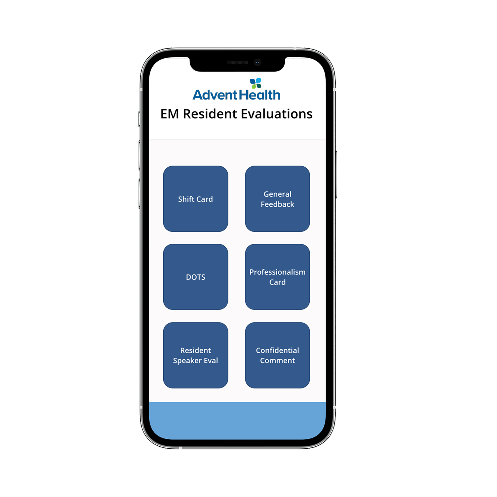
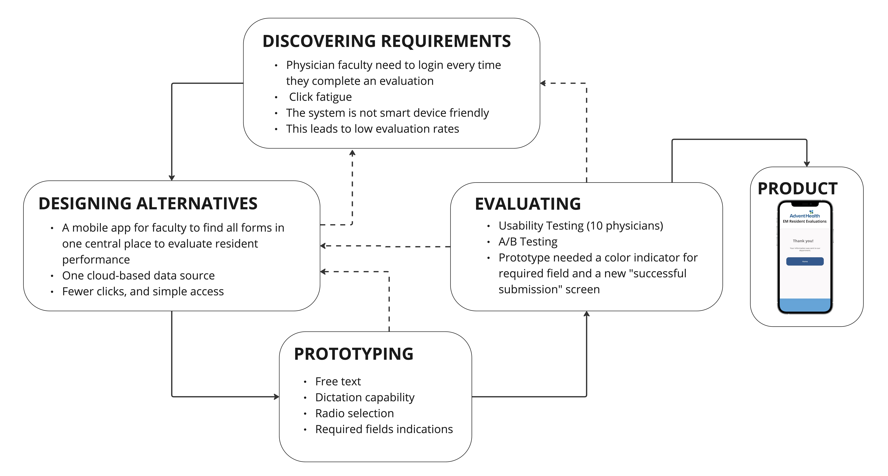
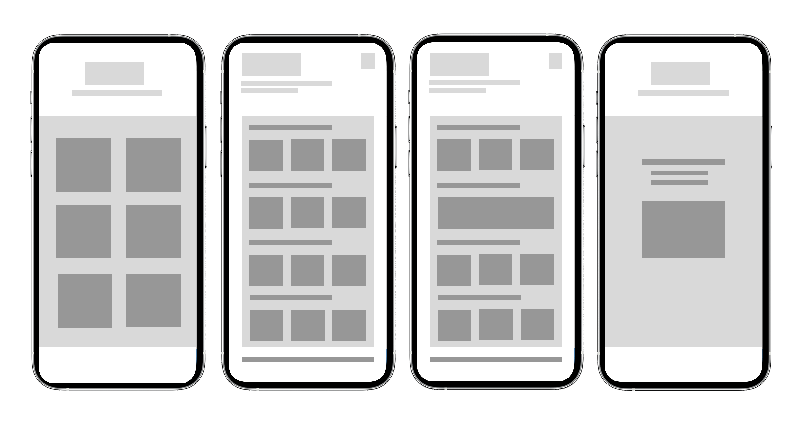

UX Researcher & Designer
Healthcare UX Design | Mobile Application
Four months
Emergency medicine faculty were required to complete resident evaluations as part of the residency training program. Existing evaluation workflows were time-consuming, difficult to complete during clinical work, and not optimized for mobile use.
Faculty members often completed evaluations between patient care responsibilities and administrative tasks.
Existing workflows required multiple steps, creating additional burden and reducing efficiency.
Stakeholder interviews, workflow analysis, literature review, and user evaluation testing (10 physicians).
The design process followed an iterative, user-centered approach that included requirements gathering, prototyping, usability testing, and refinement.
The user flow was designed for a secure Microsoft Power Apps environment, enabling users to complete multi-factor authentication only once. The application icon was saved on users' mobile devices, providing quick and convenient access while minimizing login-related friction.




The project improved the efficiency of resident evaluations through a streamlined mobile workflow and simplified navigation. From the pre-implementation year (2022-2023) to full adoption (2025-2026), the program-level total evaluations increased from 508 to 1750.
This project reinforced the importance of designing for time-constrained healthcare professionals and balancing usability with organizational requirements.